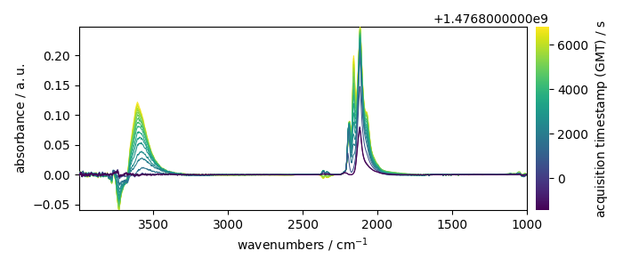
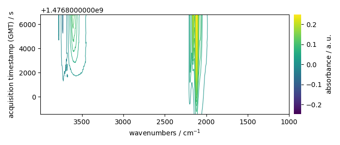
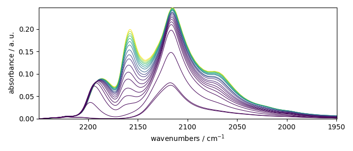
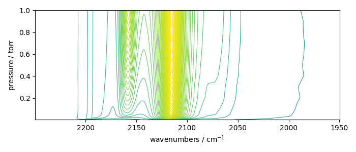

Note
Click here to download the full example code
NDDataset coordinates example¶
In this example, we show how coordinates can be used in SpectroChemPy
import spectrochempy as scp
Uploading a dataset¶
X has two coordinates:
* wavenumbers named “x”
* and timestamps (i.e., the time of recording) named “y”.
print(X.coordset)
CoordSet: [x:wavenumbers, y:acquisition timestamp (GMT)]
To display them individually use the x and y attributes of
the dataset X:
Setting new coordinates¶
In this example, each experiment have a timestamp corresponds to the time when a given pressure of CO in the infrared cell was set.
Hence, it would be interesting to replace the “useless” timestamps (y)
by a pressure coordinates:
pressures = [
0.00300,
0.00400,
0.00900,
0.01400,
0.02100,
0.02600,
0.03600,
0.05100,
0.09300,
0.15000,
0.20300,
0.30000,
0.40400,
0.50300,
0.60200,
0.70200,
0.80100,
0.90500,
1.00400,
]
A first way to do this is to replace the time coordinates by the pressure coordinate
(we first make a copy of the time coordinates for later use the original will be destroyed by the following operation)
Now we perform the replacement with this new coordinate:
c_pressures = scp.Coord(pressures, title="pressure", units="torr")
X.y = c_pressures
print(X.y)
Coord: [float64] torr (size: 19)
A second way is to affect several coordinates to the corresponding dimension. To do this, the simplest is to affect a list of coordinates instead of a single one:
X.y = [c_times, c_pressures]
print(X.y)
CoordSet: [_1:acquisition timestamp (GMT), _2:pressure]
By default, the current coordinate is the first one (here c_times).
For example, it will be used for plotting:
prefs = X.preferences
prefs.figure.figsize = (7, 3)
_ = X.plot(colorbar=True)
_ = X.plot_map(colorbar=True)
- 
- 
To seamlessly work with the second coordinates (pressures), we can change the default coordinate:
X.y.select(2) # to select coordinate ``_2``
X.y.default
Let’s now plot the spectral range of interest. The default coordinate is now used:
X_ = X[:, 2250.0:1950.0]
print(X_.y.default)
_ = X_.plot()
_ = X_.plot_map()
- 
- 
Coord: [float64] torr (size: 19)
The same can be done for the x coordinates.
Let’s take for instance row with index 10 of the previous dataset
row10 = X_[10].squeeze()
row10.plot()
print(row10.coordset)
CoordSet: [x:wavenumbers]
Now we wants to add a coordinate with the wavelength instead of wavenumber.
c_wavenumber = row10.x.copy()
c_wavelength = row10.x.to("nanometer")
print(c_wavenumber, c_wavelength)
row10.x = [c_wavenumber, c_wavelength]
row10.x.select(2)
_ = row10.plot()
""
# scp.show() # uncomment to show plot if needed (not necessary in jupyter notebook)
LinearCoord: [float64] cm⁻¹ (size: 312) LinearCoord: [float64] nm (size: 312)
''
Total running time of the script: ( 0 minutes 2.340 seconds)